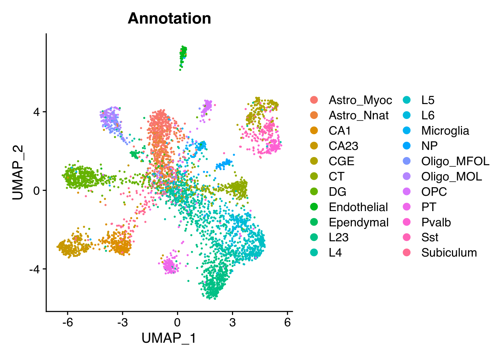
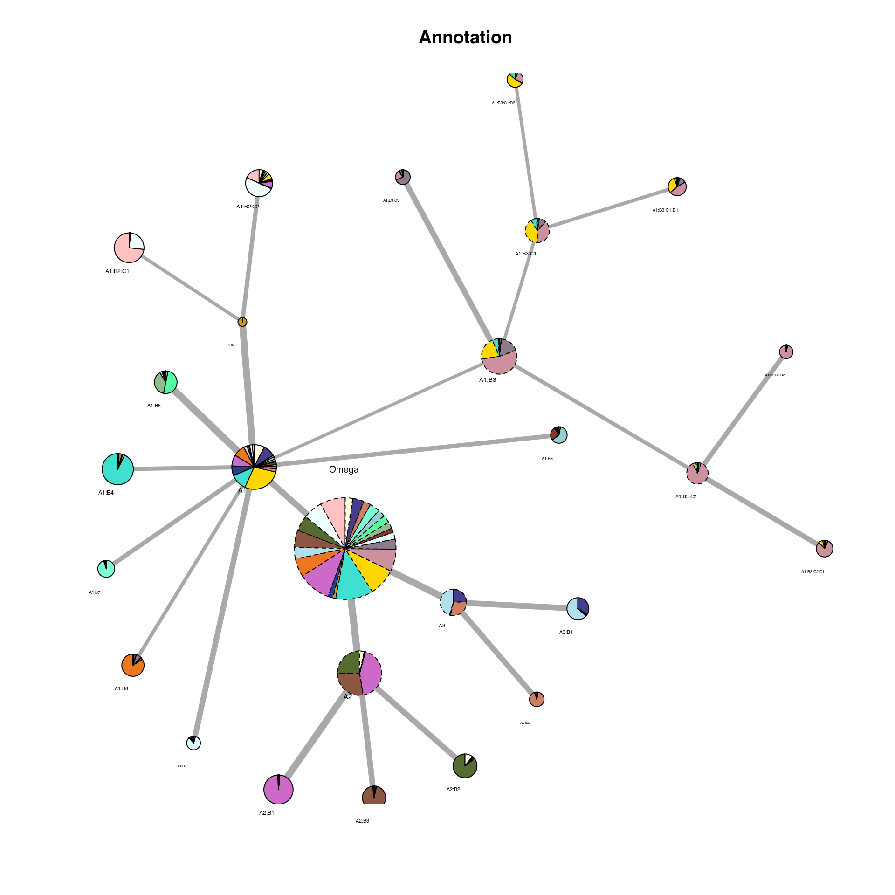
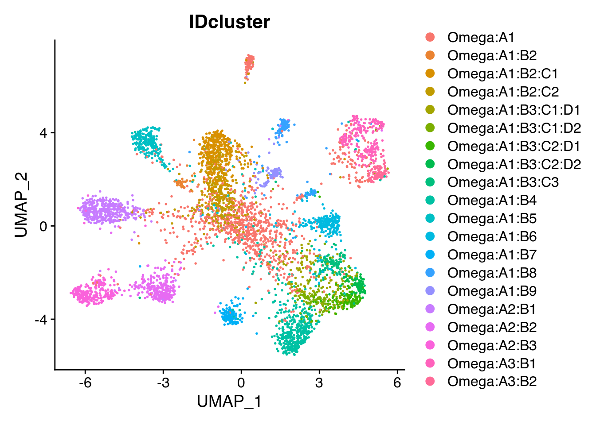
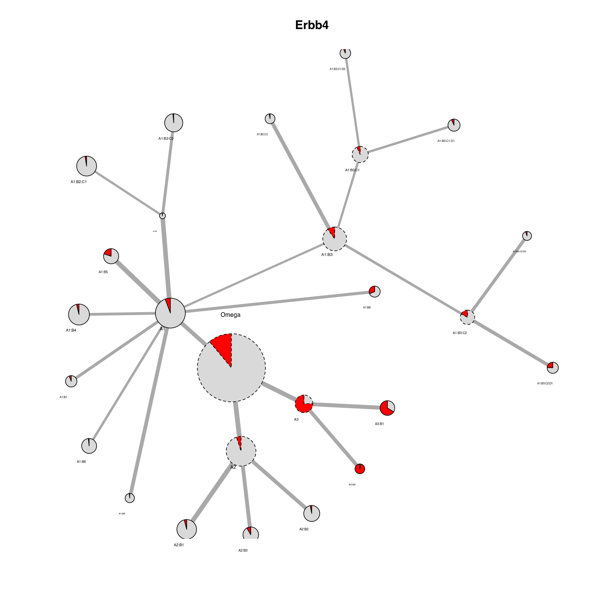

In this article, we will show how to run IDclust on a Seurat object of a single- cell RNA dataset of the mouse brain from “Joint profiling of histone modifications and transcriptome in single cells from mouse brain,Chenxu Zhu, Yanxiao Zhang, Yang Eric Li, Jacinta Lucero, . Margarita Behrens, Bing Ren, Nature Methods, 2021 Paired-Tag”
Download, extract & format scRNA of the mouse brain (Zhu et al., 2021) from the GEO portal.
set.seed(47)
# Download dataset
temp = tempfile()
tempdir = tempdir()
download.file("https://www.ncbi.nlm.nih.gov/geo/download/?acc=GSE152020&format=file&file=GSE152020%5FPaired%2DTag%5FRNA%5Ffiltered%5Fmatrix%2Etar%2Egz",
temp, quiet = TRUE)
untar(temp, exdir = tempdir)
# Download metadata
annot = tempfile()
download.file("http://catlas.org/pairedTag/cellbrowser/Paired-tag/meta.tsv", annot,
quiet = TRUE)
metadata = read.table(annot, sep = "\t", header = TRUE)
rownames(metadata) = metadata$Cell_ID
# Create Seurat object
datamatrix = Seurat::Read10X(file.path(tempdir, "01.Paired-Tag_seq_RNA_filtered_matrix"))
datamatrix = datamatrix[, match(metadata$Cell_ID, colnames(datamatrix))]
Seu = Seurat::CreateSeuratObject(datamatrix, assay = "RNA", meta.data = metadata)
# Subsample cells
Seu = Seu[, sample(ncol(Seu), 5000, replace = F)]We then run a classical Seurat normalization and dimensionality reduction. We can plot the UMAP and color by the cell type.
# From Seurat tutorial -
# https://satijalab.org/seurat/articles/pbmc3k_tutorial.html
Seu <- Seurat::NormalizeData(Seu, verbose = FALSE)
Seu <- Seurat::FindVariableFeatures(Seu, selection.method = "vst", nfeatures = 2000,
verbose = FALSE)
Seu <- Seurat::ScaleData(Seu, verbose = FALSE)
Seu <- Seurat::RunPCA(Seu, features = Seurat::VariableFeatures(object = Seu), verbose = FALSE)
Seu <- Seurat::RunUMAP(Seu, reduction = "pca", dims = 1:50, verbose = FALSE)
Seurat::DimPlot(Seu, reduction = "umap", group.by = "Annotation") ## Classical Louvain clustering
We can run a classical Louvain clustering to see the clusters.
Seu <- Seurat::FindNeighbors(Seu, verbose = FALSE)
Seu <- Seurat::FindClusters(Seu, verbose = FALSE)
Seurat::DimPlot(Seu, reduction = "umap", group.by = "seurat_clusters")We can now run the Iterative Differential Clustering, that will re-process and re-cluster each cluster iteratively and find subclusters with significant differences between each other.
By default for a Seurat object the processing_Seurat function is used for re-processing and the differential_edgeR_pseudobulk_LRT is used to find significant marker genes.
set.seed(47)
output_dir = tempdir()
Seu = iterative_differential_clustering(Seu, output_dir = output_dir, plotting = FALSE,
saving = TRUE, n_dims = 50, dim_red = "pca", vizualization_dim_red = "umap",
processing_function = processing_Seurat, differential_function = differential_edgeR_pseudobulk_LRT,
logFC.th = log2(1.5), qval.th = 0.01, min_frac_cell_assigned = 0.1, limit = 10,
starting.resolution = 0.1, starting.k = 100, resolution = 0.8, k = 100, verbose = FALSE)## Not enough cells to form 2 replicates ... assigning 0 differential genes.
## Not enough cells to form 2 replicates ... assigning 0 differential genes.We can now read in the output ‘IDC_summary’ object and plot the cluster hierarchies compared to the author clusters. On this plot, each node is a cluster. The colors represent the distribution of author cluster within each cluster. Link between nodes represent a hierarchy in the iteration. The width of the edges is proportional to the number of genes found.
IDC_summary = qs::qread(file.path(output_dir, "IDC_summary.qs"))
plot_cluster_network(Seu, IDC_summary = IDC_summary, color_by = "Annotation", legend = FALSE)
## Annotation Annotation_color
## 1 Astro_Myoc rosybrown1
## 2 Astro_Nnat azure
## 3 CA1 darkolivegreen
## 4 CA23 lightsalmon4
## 5 CGE lightblue2
## 6 CT chocolate2
## 7 DG orchid3
## 8 Endothelial royalblue4
## 9 Ependymal goldenrod3
## 10 L23 turquoise
## 11 L4 gold
## 12 L5 pink3
## 13 L6 thistle4
## 14 Microglia lightcyan1
## 15 NP tomato4
## 16 Oligo_MFOL darkseagreen
## 17 Oligo_MOL seagreen1
## 18 OPC paleturquoise3
## 19 PT aquamarine1
## 20 Pvalb lightsalmon3
## 21 Sst darkslateblue
## 22 Subiculum lightyellow1A ‘IDcluster’ column was added to the Seurat object, which we can now project the cluster found this way on the UMAP.
Seurat::DimPlot(Seu, reduction = "umap", group.by = "IDcluster")
We can also plot particular marker genes in the cluster network by changing the ‘color_by’ parameter to a gene present in the Seurat object.
plot_cluster_network(Seu, IDC_summary = IDC_summary, color_by = "Erbb4", threshold_to_define_feature_active = 2,
legend = FALSE)
## Erbb4 Erbb4_color
## 1 Active red
## 2 Inactive grey85